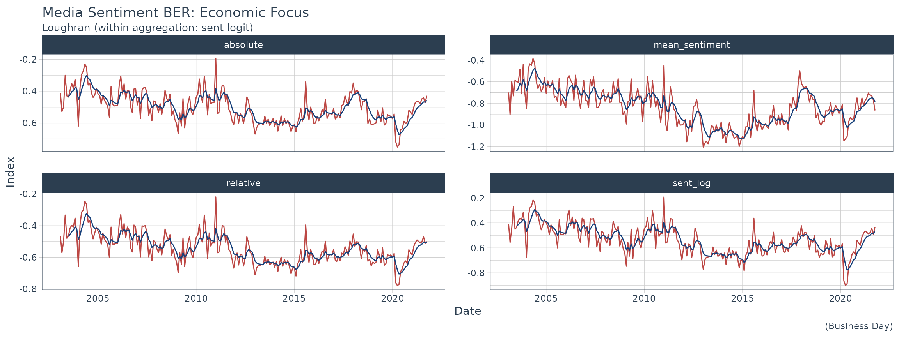

Lets plot the latest sentiment index using sent_index() function.
In this example we will be calling the economy focus index that is constructed using the news data. To characterize the sentiment, we use the Loughran dictionary and calculate the sentiment within each article using the logit formulation.
msi_data <- sent_index(
source = "all",
topic = "economy",
freq = "month",
dict = "loughran",
aggr = "sent_logit"
)Once we have retrieved it is fairly easy to plot the index and the different time aggregations using ggplot2.
msi_data %>%
filter(published_date > "2003-01-01") %>%
mutate(published_date = as.Date(published_date)) %>%
pivot_longer(names_to = "sentiment_type", values_to = "values", -c(source:aggr_type)) %>%
ggplot(., aes(published_date, values, group = sentiment_type), color = 1) +
geom_line(color = "#BC4744") +
geom_ma(color = "#18417B", n = 6, linetype = "solid", ma_fun = EMA) +
labs(title = "Media Sentiment BER: Economic Focus",
subtitle = "Loughran (within aggregation: sent logit)",
y = "Index",
x = "Date",
caption = "(Business Day)") +
scale_x_date() +
facet_wrap(~sentiment_type, scales = "free_y") +
theme_tq()